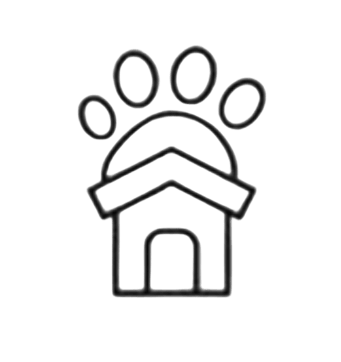
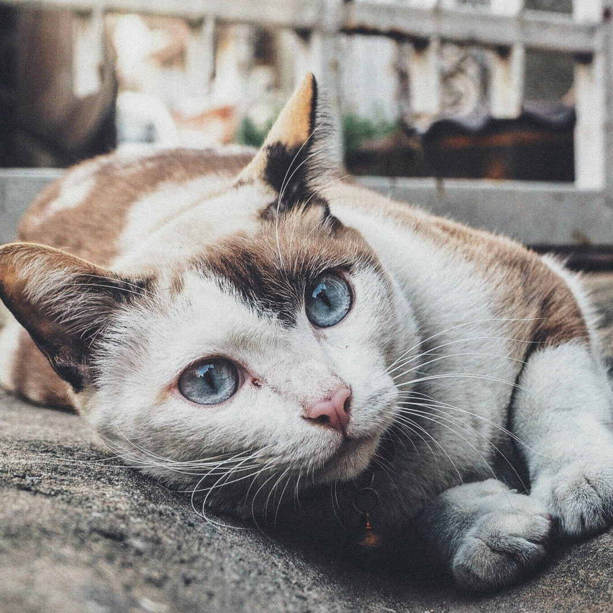
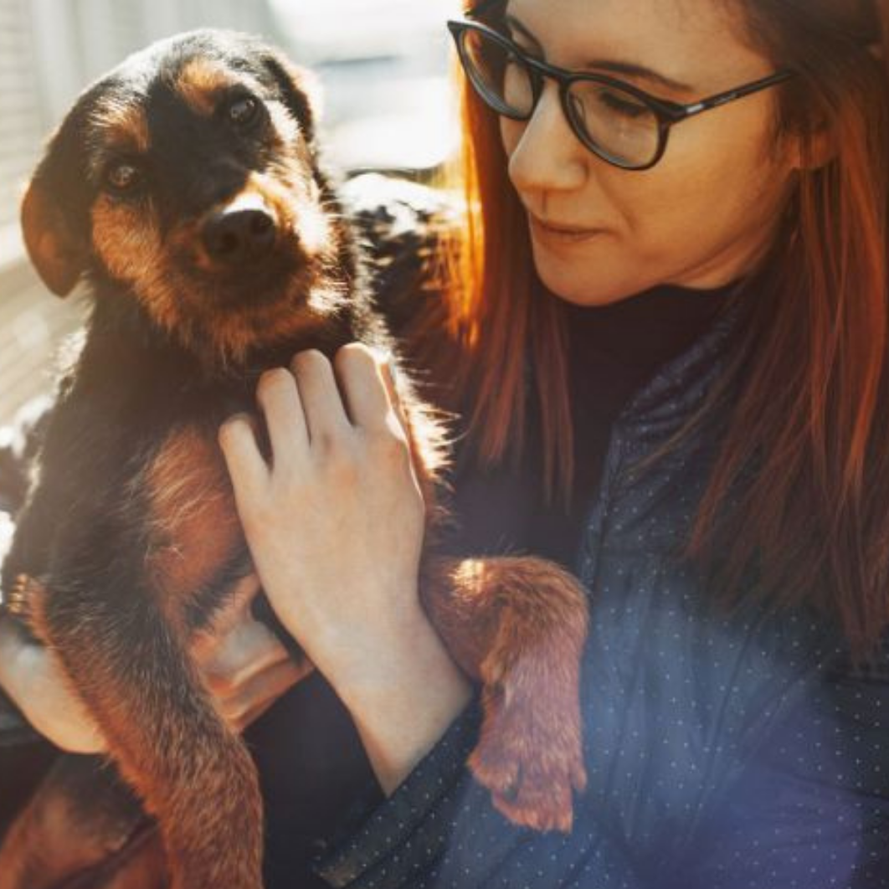

C.A.A.N
Centro de Ayuda al Animal de Necochea
Trabajamos por un mundo en el que cada animal tenga un hogar seguro y
una vida digna.

Adopta

La adopción de una mascota no solo brinda un hogar amoroso a un
animal necesitado, sino que también enriquece tu vida con
compañía, alegría y amor incondicional. Cada vez que abres tu
hogar a una mascota rescatada, liberas espacio en los refugios y
permites que otra vida pueda ser salvada. Acompáñanos en esta
noble causa, da el paso y descubre la felicidad que solo una
mascota adoptada puede ofrecer.
Mira quiénes te están esperando
DONA
Tu colaboración salva y transforma vidas
Los animales que rescatamos suelen necesitar urgentemente tratamientos
y medicamentos, tanto como abrigo de las temperaturas extremas y
alimentación. Hay muchas maneras de colaborar.
Descubre cómo ayudar
Hazte voluntario
En nuestra organización, cada voluntario es una pieza vital de
un engranaje que trabaja incansablemente para brindar amor,
cuidado y un hogar temporal a los animales que más lo necesitan.
Ser voluntario no solo es una oportunidad de dar, sino también
de recibir inmensas recompensas emocionales. Desde los momentos
de ternura con nuestros amigos de cuatro patas hasta la
satisfacción de verlos encontrar su hogar definitivo, tu tiempo
y dedicación tienen un impacto directo y significativo. Únete a
nosotros y experimenta la magia de transformar vidas, incluyendo
la tuya.
Entérate cómo hacer la diferencia
